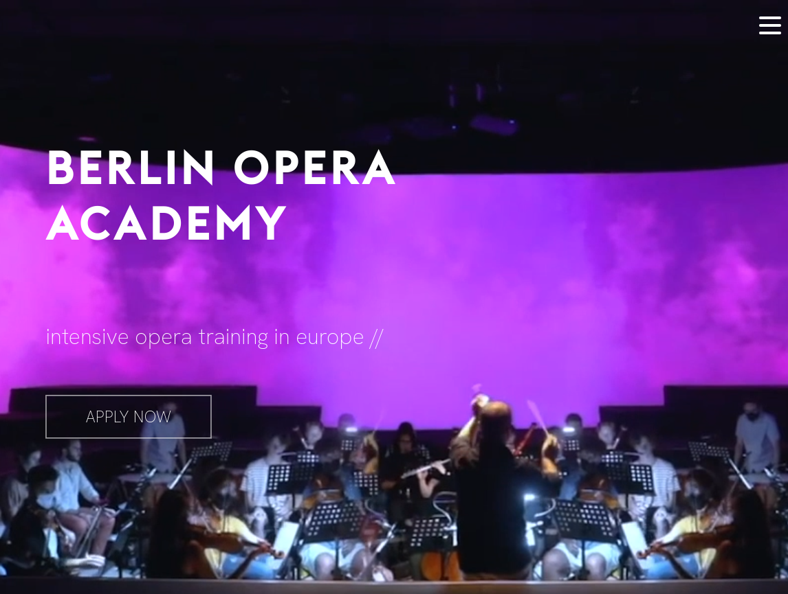
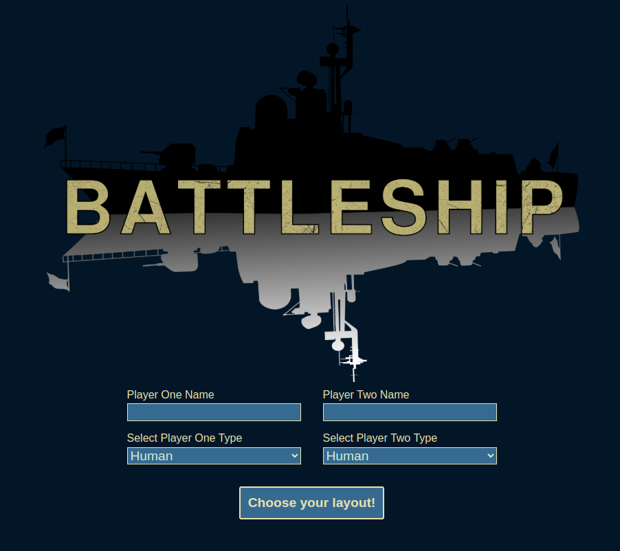
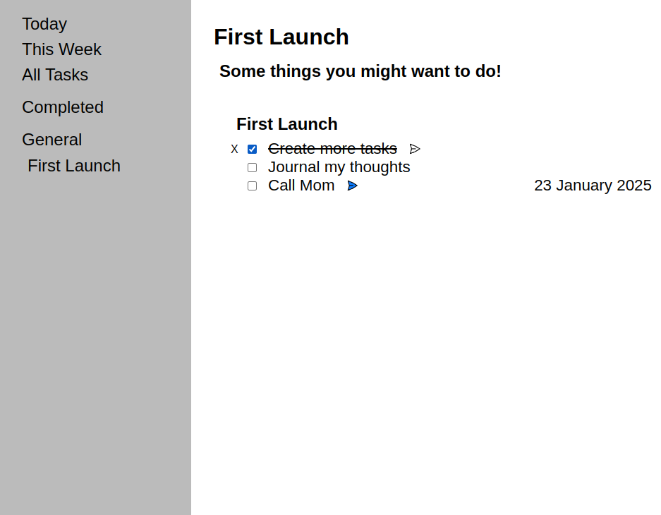
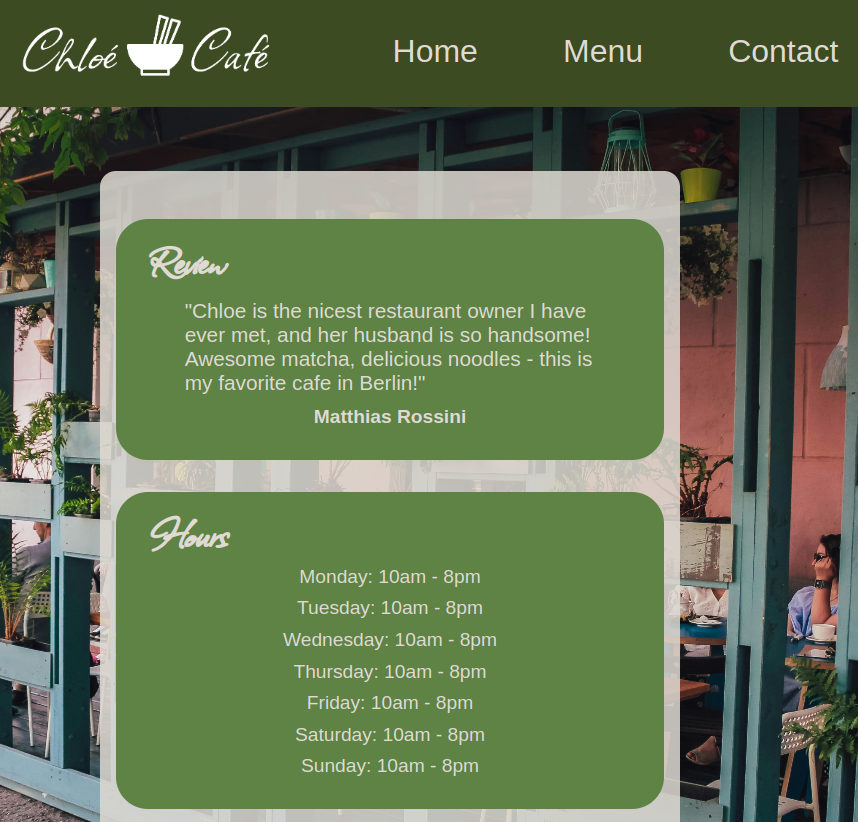

My Work

Business Automation
For a previous client, I automated their largely spreadsheet based workflow with extensive use of Google Apps Script. I wrote custom formulae, connected their spreadsheets to various external API's, including Slack and Twilio, generated various emails and reminders, organized their data into a searchable database, and much more.
All of this code is proprietary, but I am happy to discuss specifics and processes with those who are interested.



Knight Travails
To familiarize myself with data-structures and work on my problem-solving skills, I solved the classic Knight Travails problem.
The script here will take any starting and ending positions on a chessboard and calculate the shortest sequence of moves that a knight can take to arrive at its destination.